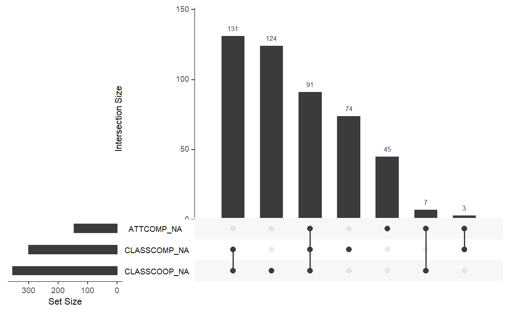
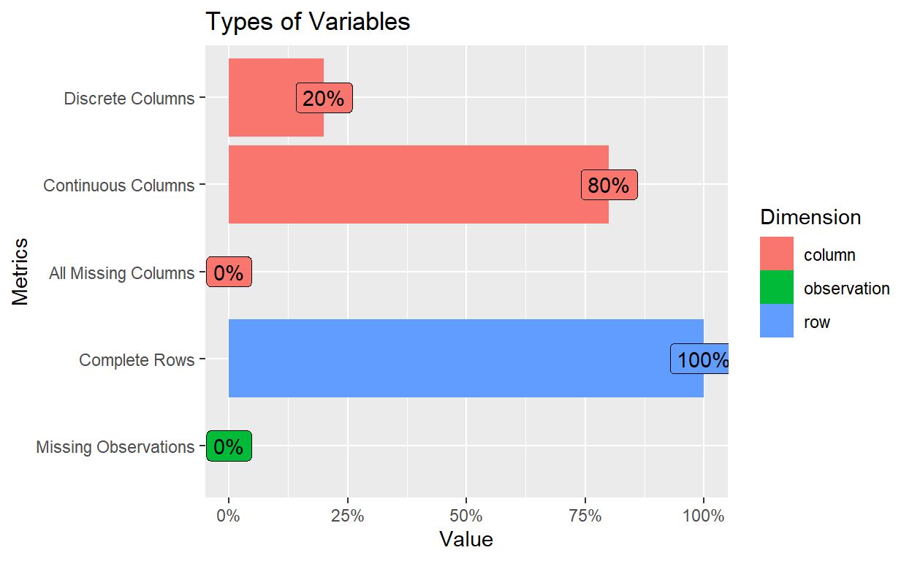
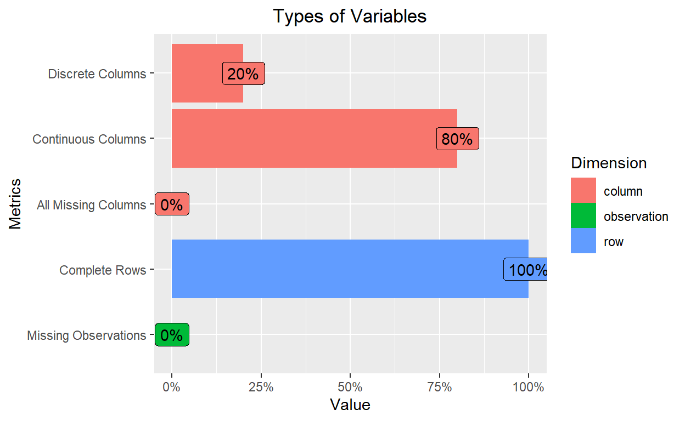
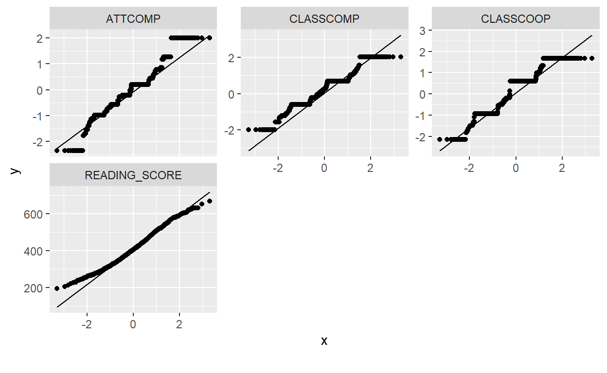
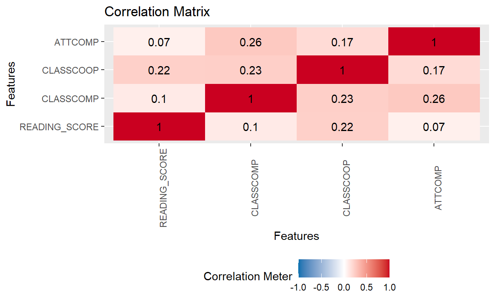
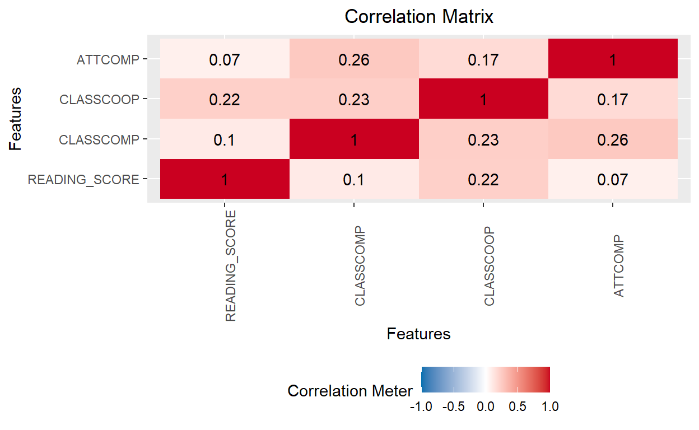
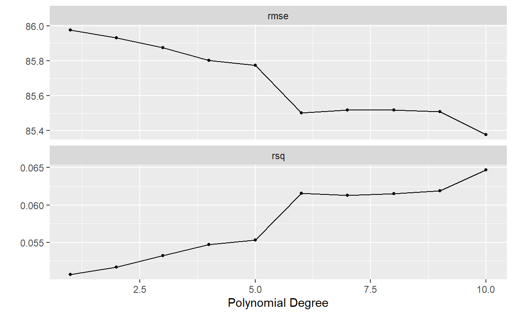

In this post, I will be developing two statistical learning models, namely Linear Regression and Polynomial Regression, and apply it to Thai student data from the Programme for International Student Assessment (PISA) 2018 data set to examine the impact of classroom competition and cooperation to students’ academic performance.
(14 min read)
It has been a while since my last post as I am swamped with manuscript writings, but a good thing is I got more ideas of what to write for my blog as well. As I learned more about data mining, I became aware about the overlapping space between Statistics and Machine Learning in how they involve data as a primary part in their work. Statistics, which is the study that concerns the understanding, analyzing, and interpreting empirical data, is known as the underlying mechanism of machine learning as algorithms such as Linear Regression or Logistic Regression usually operate under a set of equations; for that, it is reasonable to say that statistics is a prerequisite for researchers to learn before dicing into machine learning (Lomax and Hahs-Vaughn, 2012)
Statistical Learning (SL) is a sub-field of Machine Learning (ML) research that seeks to explain relationship between variables with statistical models before extending their capability to predict the outcome of unseen data points (Vapnik, 1999). Some may say that SL and ML are the same thing; that is true to an extent as statistics is the science that works behind the development of ML, but there are also differences if you really look into the technical part of it.
The traditional statistical approach focuses on inferring relationships between variables with explicitly laid out instructions or equations such as Linear Regression, while the ML approach to research focuses on developing algorithms that can recognize patterns in the data set to accurately predict the unseen data without much emphasis on assumptions behind the data set and interpretability of the model (e.g., Random Forest, Neural Network) (Glen, 2019). Statistical Learning positions itself in the intersection of the two fields by focusing on understanding relationships between variables while at the same time seeking to develop a meaningful model that can be used to predict unseen data.
In other words, Statistics focuses on learning the meaning of data, typically the low-dimensionality one, via statistical inferences while ML focuses on the application aspect by developing a complex model that is accurate and usable in the real application. Statistical Learning aims to cover both purposes by focusing on understanding meaning of the data with a meaningful model while also aiming to use that model in the real-world application (Iniesta et al., 2016; University of Delaware, 2021).
In this post, I will be developing two statistical learning models, namely Linear Regression and Polynomial Regression, and apply it to Thai student data from the Programme for International Student Assessment (PISA) 2018 data set to examine the impact of classroom competition and cooperation to students’ academic performance. PISA is a large-scale educational survey that is collected internationally every three years on school-related topics such as student achievement, student school well-being, and teachers’ instructional support on students (OECD, 2019).
setwd("D:/Program/Private_project/DistillSite/_posts/2022-02-27-statlearning")
library(foreign) #To read SPSS data
library(psych) #For descriptive stat
library(tidyverse) #for data manipulation
library(DataExplorer)
library(ggcorrplot) #for correlation matrix
library(tidymodels) #for model building
library(kableExtra) #for kable table
library(visdat) #for overall missingness visualization
read_csv and subset our variables of interest with select. We will also recode factor variables such as gender to make it dichotomous. That is, 1 as an indicator of that variable and 0 as anything that is not. See the Coding Systems for Categorical Variables page of University of California, Los Angeles.#Import the data set
PISA_TH <-read_csv("PISA2018TH.csv", col_names = TRUE)
PISA_Subsetted <- PISA_TH %>%
select(FEMALE = ST004D01T, READING_SCORE = PV1READ, CLASSCOMP = PERCOMP,
CLASSCOOP = PERCOOP, ATTCOMP = COMPETE)
PISA_Subsetted$FEMALE <- recode_factor(PISA_Subsetted$FEMALE,
"1" = "1", "2" = "0")
kbl(head(PISA_Subsetted)) %>%
kable_styling(bootstrap_options = c("striped", "hover", "condensed", "responsive"),
full_width = TRUE, position = "left")
| FEMALE | READING_SCORE | CLASSCOMP | CLASSCOOP | ATTCOMP |
|---|---|---|---|---|
| 1 | 480.756 | 1.5630 | 1.6762 | 0.4352 |
| 1 | 502.610 | NA | NA | NA |
| 1 | 476.744 | 0.0866 | -0.5358 | 0.4352 |
| 1 | 489.858 | 0.6912 | 0.6012 | -0.2661 |
| 0 | 536.178 | 1.2903 | 1.6762 | 0.4352 |
| 0 | 566.755 | 0.2020 | 0.6012 | 0.3709 |
visdat::vis_miss(PISA_Subsetted, sort_miss = TRUE, cluster = TRUE)
naniar::gg_miss_upset(PISA_Subsetted, nsets = 5, nintersects = 10)

PISA_Subsetted <- na.omit(PISA_Subsetted)
To perform analyses using statistical learning, it is important to confirm that all statistical assumptions of the models were met to ensure that the results are meaningful. The assumptions that we will check in this section are normality distribution, multicollinearity, and influential outliers. There are other assumptions we need to check as well such as variable independence andhomoscedasticity (for the equality of variance throughout the data set), but we would have to create a linear regression model with the whole data set without teaching the machine. We won’t be doing that here because I aim to automate the process with the tidymodel approach instead of performing regression manually every time.
We will first examine structure of the data set with plot_str to plot data structure and plot_intro to plot basic infornmation of the data set.
plot_intro(PISA_Subsetted, title = "Types of Variables")+
theme(plot.title = element_text(hjust = 0.5))

plot_str(PISA_Subsetted)
describe(PISA_Subsetted)
vars n mean sd median trimmed mad min
FEMALE* 1 8158 1.46 0.50 1.00 1.45 0.00 1.00
READING_SCORE 2 8158 411.26 88.42 402.43 408.00 91.53 146.33
CLASSCOMP 3 8158 0.20 0.87 0.20 0.19 0.73 -1.99
CLASSCOOP 4 8158 0.20 0.92 0.60 0.22 1.07 -2.14
ATTCOMP 5 8158 0.03 0.79 0.20 0.00 0.65 -2.35
max range skew kurtosis se
FEMALE* 2.00 1.00 0.18 -1.97 0.01
READING_SCORE 720.09 573.76 0.32 -0.37 0.98
CLASSCOMP 2.04 4.03 0.02 -0.04 0.01
CLASSCOOP 1.68 3.82 -0.39 -0.47 0.01
ATTCOMP 2.01 4.35 0.13 1.11 0.01plot_histogram(PISA_Subsetted)

The results of skewness and kurtosis indicate no departure from normality; that is, the data is normally distributed with all skewness stays between the range of -0.5 and 0.5, and all kurtosis stays between the range of -3 and 3 (Lomax and Hahs-Vaughn, 2012). The normality assumption is further confirmed with bell shape of the histogram and visualization from the Q-Q plots. Next, we will examine bivariate correlation between variables to investigate their relationships and confirm the absence of multicollinearity assumption.
Multicollinearity refers to the condition where relationships between our variables of interest is high; this which may influence the result of our analysis because we are having two variables that investigate the same thing (Alin, 2010). For example, when you investigate the influence of person’s weight to their height and included both weight in pound and weight in kilogram, the results can be messed up because you include variables that measure to much of the same thing.
plot_correlation(PISA_Subsetted, type = "continuous", title = "Correlation Matrix") +
theme(plot.title = element_text(hjust = 0.5))

create_report(PISA_Subsetted).set.seed(456)
# Put 3/4 of the data into the training set
data_split <- initial_split(PISA_Subsetted, prop = 3/4)
# Create data frames for the two sets:
train_data <- training(data_split) #3/4
test_data <- testing(data_split) #1/4
READING_SCORE) with the degree of classroom cooperation, the degree of classroom competition, and students’ attitude to competition. First, we will request for a linear regression model with linear_reg() set the mode to regression and set the engine to “lm”, which stands for linear model.Linear Regression Model Specification (regression)
Computational engine: lm recipe package. We will specify the formula as READING_SCORE ~ ., which means we will be predicting students’ reading score with all other variables. The step_rm() argument removes the variable we specified; for our case, it is students’ gender. For your reference, there are functions that assist us in other ways of data preprocessing as well such as step_dummy() to dummy code the variable or step_string2factor that converts string variables into factor variables.PISA_linear_recipe <-
recipe(READING_SCORE ~ ., data = train_data) %>%
step_rm(FEMALE)
PISA_linear_recipe
Recipe
Inputs:
role #variables
outcome 1
predictor 4
Operations:
Variables removed FEMALEworkflow()== Workflow ==========================================================
Preprocessor: Recipe
Model: linear_reg()
-- Preprocessor ------------------------------------------------------
1 Recipe Step
* step_rm()
-- Model -------------------------------------------------------------
Linear Regression Model Specification (regression)
Computational engine: lm # A tibble: 4 x 5
term estimate std.error statistic p.value
<chr> <dbl> <dbl> <dbl> <dbl>
1 (Intercept) 406. 1.15 355. 0
2 CLASSCOMP 3.77 1.33 2.84 4.50e- 3
3 CLASSCOOP 19.7 1.23 16.0 1.91e-56
4 ATTCOMP 3.08 1.45 2.12 3.38e- 2# A tibble: 6,118 x 2
.pred READING_SCORE
<dbl> <dbl>
1 427. 471.
2 421. 239.
3 451. 546.
4 405. 248.
5 407. 457.
6 398. 491.
7 389. 308.
8 421. 320.
9 394. 473.
10 404. 507.
# ... with 6,108 more rows.pred column is the predicted value and the READING_SCORE column is the actual value. We can see that some predicted numbers are off from the actual number. Let us see overall performance of the model with Mean-Squared Error (MSE), Root Mean-Squared Error (RMSE), and R-Squared (R^2). The first two values indicate how poor our model performs, and the third value indicates how many percent of the variation of our targeted variable is explained by the model.mse_vec <- function(truth, estimate, na_rm = TRUE, ...) {
mse_impl <- function(truth, estimate) {
mean((truth - estimate) ^ 2)
}
metric_vec_template(
metric_impl = mse_impl,
truth = truth,
estimate = estimate,
na_rm = na_rm,
cls = "numeric",
...
)
}
mse_vec(
truth = PISA_linear_train_pred$READING_SCORE,
estimate = PISA_linear_train_pred$.pred
)
[1] 7389.577rmse(PISA_linear_train_pred,
truth = READING_SCORE,
estimate = .pred)
# A tibble: 1 x 3
.metric .estimator .estimate
<chr> <chr> <dbl>
1 rmse standard 86.0rsq(PISA_linear_train_pred,
truth = READING_SCORE,
estimate = .pred)
# A tibble: 1 x 3
.metric .estimator .estimate
<chr> <chr> <dbl>
1 rsq standard 0.0499# A tibble: 2,040 x 2
.pred READING_SCORE
<dbl> <dbl>
1 398. 477.
2 427. 542.
3 415. 519.
4 422. 597.
5 421. 467.
6 434. 573.
7 397. 522.
8 425. 436.
9 423. 440.
10 399. 543.
# ... with 2,030 more rowsmse_vec(
truth = PISA_linear_test_pred$READING_SCORE,
estimate = PISA_linear_test_pred$.pred
)
[1] 7472.221rmse(PISA_linear_test_pred,
truth = READING_SCORE,
estimate = .pred)
# A tibble: 1 x 3
.metric .estimator .estimate
<chr> <chr> <dbl>
1 rmse standard 86.4rsq(PISA_linear_test_pred,
truth = READING_SCORE,
estimate = .pred)
# A tibble: 1 x 3
.metric .estimator .estimate
<chr> <chr> <dbl>
1 rsq standard 0.0584We can customize ability to which our model can capture the pattern of our data by increasing its degree as demonstrated by the picture above. We can see that the red line (3rd degree) misses to capture a lot of patterns while the blue line (5th degree) captures a fair amount of patterns while the green line travels to almost every possible patterns. However, it is not necessarily true that the model with the highest degree is the best since it could capture noises that will not appear in the new data we will test the machine on (as well as the real-world data).
So, after all we have discussed so far, let’s try creating a 3rd degree polynomial regression to see if we can capture the relationship any better than our linear regression. We will include step_poly with degree = 3 into the recipe function to make our model able to capture a degree of non-linearity.
Recipe
Inputs:
role #variables
outcome 1
predictor 3
Operations:
Orthogonal polynomials on CLASSCOMP
Orthogonal polynomials on CLASSCOOPlm_mod).== Workflow ==========================================================
Preprocessor: Recipe
Model: linear_reg()
-- Preprocessor ------------------------------------------------------
2 Recipe Steps
* step_poly()
* step_poly()
-- Model -------------------------------------------------------------
Linear Regression Model Specification (regression)
Computational engine: lm extract_fit_parsnip() to extract coefficients of our model as well to see which polynomial degree of which variable is significant in capturing patterns of the training data.== Workflow [trained] ================================================
Preprocessor: Recipe
Model: linear_reg()
-- Preprocessor ------------------------------------------------------
2 Recipe Steps
* step_poly()
* step_poly()
-- Model -------------------------------------------------------------
Call:
stats::lm(formula = ..y ~ ., data = data)
Coefficients:
(Intercept) ATTCOMP CLASSCOMP_poly_1
411.053 2.729 271.369
CLASSCOMP_poly_2 CLASSCOMP_poly_3 CLASSCOOP_poly_1
295.526 19.960 1400.633
CLASSCOOP_poly_2 CLASSCOOP_poly_3
-55.306 304.765 # A tibble: 8 x 5
term estimate std.error statistic p.value
<chr> <dbl> <dbl> <dbl> <dbl>
1 (Intercept) 411. 1.10 374. 0
2 ATTCOMP 2.73 1.45 1.88 6.00e- 2
3 CLASSCOMP_poly_1 271. 90.4 3.00 2.69e- 3
4 CLASSCOMP_poly_2 296. 88.4 3.34 8.31e- 4
5 CLASSCOMP_poly_3 20.0 87.2 0.229 8.19e- 1
6 CLASSCOOP_poly_1 1401. 88.7 15.8 4.97e-55
7 CLASSCOOP_poly_2 -55.3 88.6 -0.625 5.32e- 1
8 CLASSCOOP_poly_3 305. 87.2 3.50 4.75e- 4| .pred | READING_SCORE |
|---|---|
| 398.7327 | 476.744 |
| 426.4006 | 542.238 |
| 410.2957 | 518.744 |
| 417.5398 | 597.441 |
| 415.7663 | 466.964 |
| 431.5449 | 572.923 |
mse_vec(
truth = PISA_poly_pred$READING_SCORE,
estimate = PISA_poly_pred$.pred)
[1] 7470.233rmse(PISA_poly_pred,
truth = READING_SCORE,
estimate = .pred)
# A tibble: 1 x 3
.metric .estimator .estimate
<chr> <chr> <dbl>
1 rmse standard 86.4rsq(PISA_poly_pred,
truth = READING_SCORE,
estimate = .pred)
# A tibble: 1 x 3
.metric .estimator .estimate
<chr> <chr> <dbl>
1 rsq standard 0.0584Cross-Validation is a way to evaluate performance of our machine learning models by dividing our data into smaller groups and use them to estimate how the model will perform in when used to make predictions on data that are not in our training set. Basically, we test our machines with smaller tests to see which of them qualifies for the final test. Another way we can see this is when we tune an old ratio to make it able to receive the clearest frequency of the broadcast, but we use the machines to automatically do it instead to save our time and effort.
We will begin by setting up our recipe with tune() and add it to a workflow.
== Workflow ==========================================================
Preprocessor: Recipe
Model: linear_reg()
-- Preprocessor ------------------------------------------------------
1 Recipe Step
* step_poly()
-- Model -------------------------------------------------------------
Linear Regression Model Specification (regression)
Computational engine: lm train_data_subsetted = subset(train_data, select = c('READING_SCORE','CLASSCOMP','CLASSCOOP','ATTCOMP'))
PISA_folds <- vfold_cv(train_data, v = 10)
degree_grid <- grid_regular(degree(range = c(1, 10)), levels = 10)
tune_resample <- tune_grid(
object = PISA_poly_wf,
resamples = PISA_folds,
grid = degree_grid)
autoplot(tune_resample)

show_best(tune_resample, metric = "rmse")
# A tibble: 5 x 7
degree .metric .estimator mean n std_err .config
<dbl> <chr> <chr> <dbl> <int> <dbl> <chr>
1 10 rmse standard 85.4 10 0.852 Preprocessor10_Model1
2 6 rmse standard 85.5 10 0.845 Preprocessor06_Model1
3 9 rmse standard 85.5 10 0.860 Preprocessor09_Model1
4 8 rmse standard 85.5 10 0.857 Preprocessor08_Model1
5 7 rmse standard 85.5 10 0.843 Preprocessor07_Model1select_by_one_std_err(tune_resample, degree, metric = "rsq")
# A tibble: 1 x 9
degree .metric .estimator mean n std_err .config .best .bound
<dbl> <chr> <chr> <dbl> <int> <dbl> <chr> <dbl> <dbl>
1 6 rsq standard 0.0616 10 0.00730 Prepro~ 0.0647 0.0563best_degree to include it in the final workflow. Then, as usual, we teach (fit) it and test it with our test data.best_degree <- select_by_one_std_err(tune_resample, degree, metric = "rsq")
final_wf <- finalize_workflow(PISA_poly_wf, best_degree)
final_fit <- fit(final_wf, train_data)
final_fit
== Workflow [trained] ================================================
Preprocessor: Recipe
Model: linear_reg()
-- Preprocessor ------------------------------------------------------
1 Recipe Step
* step_poly()
-- Model -------------------------------------------------------------
Call:
stats::lm(formula = ..y ~ ., data = data)
Coefficients:
(Intercept) ATTCOMP CLASSCOMP_poly_1
411.050 2.836 279.070
CLASSCOMP_poly_2 CLASSCOMP_poly_3 CLASSCOMP_poly_4
300.125 19.260 -167.827
CLASSCOMP_poly_5 CLASSCOMP_poly_6 CLASSCOOP_poly_1
-197.978 -477.187 1381.076
CLASSCOOP_poly_2 CLASSCOOP_poly_3 CLASSCOOP_poly_4
-56.933 281.590 -251.840
CLASSCOOP_poly_5 CLASSCOOP_poly_6
-130.564 389.358 [1] 7382.151rmse(PISA_poly_test_pred,
truth = READING_SCORE,
estimate = .pred)
# A tibble: 1 x 3
.metric .estimator .estimate
<chr> <chr> <dbl>
1 rmse standard 85.9rsq(PISA_poly_test_pred,
truth = READING_SCORE,
estimate = .pred)
# A tibble: 1 x 3
.metric .estimator .estimate
<chr> <chr> <dbl>
1 rsq standard 0.0697tabl <- "
| Model | R-Square | MSE | RMSE |
|---------------|:-------------:|------:|-----:|
| Linear Reg | 0.0584 | 7472.2| 86.4 |
| Sextic Reg | 0.0697 | 7382.1| 85.9 |
"
cat(tabl)
| Model | R-Square | MSE | RMSE |
|---|---|---|---|
| Linear Reg | 0.0584 | 7472.2 | 86.4 |
| Sextic Reg | 0.0697 | 7382.1 | 85.9 |
What we have done so far is developing two predictive models of linear regression and polynomial regression to predict students’ reading score from the degree of classroom cooperation, the degree of classroom competition, and students’ attitude to competition. While the traditional statistical approach examines the entire data set to make retrospective inferences, the statistical learning approach that we use both examines the relationship between the predictors and the targeted variables as well as testing predictive power of our models with the hold-out testing set, so that it can be used with new data we may receive in the future.
However, considering the differences in performance metrics between the two algorithm, linear regression could be more appropriate with the variables examined in this study as its performance is slightly lower than sextic Regression at the trade-off of model interpretability. In other words, it is easier to interpret the model to non-technical audience and therefore easier to put the result into practice.
We can incorporate the model into an early warning system to inform teachers in their feedback provision to students in addition to other information such as students’ score and their class history. However, note that the models we developed in this post is far from perfect. The data set used in this study is relatively outdated as the new data of PISA 2022 cycle will be released in the future. Performance of the models leaves much to be desired as only 6% of the dependent variable was accounted for at most.
The thing is, we have accomplished what we are here for. We have tried our hands on developing a couple models with a large scale data set and user it to predict unseen data with statistical learning approach. Instead of going for complex models like Random Forest or Artificial Neural Networks, sticking to the ground with basic models could also be feasible in the actual practice as well. This is the point I am trying to make in this post. Thank you very much for reading. Have a good one!
Text and figures are licensed under Creative Commons Attribution CC BY 4.0. The figures that have been reused from other sources don't fall under this license and can be recognized by a note in their caption: "Figure from ...".
For attribution, please cite this work as
Wongvorachan (2022, Feb. 27). Tarid Wongvorachan: Examining PISA 2018 Data Set with Statistical Learning Approach. Retrieved from https://taridwong.github.io/posts/2022-02-27-statlearning/
BibTeX citation
@misc{wongvorachan2022examining,
author = {Wongvorachan, Tarid},
title = {Tarid Wongvorachan: Examining PISA 2018 Data Set with Statistical Learning Approach},
url = {https://taridwong.github.io/posts/2022-02-27-statlearning/},
year = {2022}
}